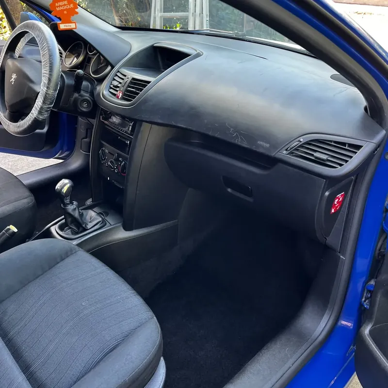

Services · Nettoyage intérieur de voiture
Nettoyage intérieur de voiture à Toulouse
Voiture personnelle, utilitaire qui tourne sur les chantiers, véhicule de famille : nous nettoyons l'habitacle sur votre parking, chez vous ou au travail. Formule Basique dès 50 €, Premium dès 70 €.

Pourquoi un nettoyage professionnel
Miettes, sable, poussière sur le tableau de bord, taches sur les sièges, tapis de sol pleins de débris : l'intérieur d'une voiture se salit vite, surtout avec des enfants ou un usage professionnel.
Nous venons avec le matériel : aspirateur professionnel, produits pour plastiques et machine d'injection-extraction pour les sièges et moquettes. Vous n'avez pas à vous déplacer en station.
Ce qui est compris
- Aspiration complète de l'habitacle et du coffre
- Dépoussiérage des plastiques, du tableau de bord, de la console et des aérateurs
- Nettoyage des tapis de sol
- Formule Premium : shampoing des sièges, tapis et moquettes par injection-extraction
Tarifs
- Formule BasiqueAspiration complète de l'habitacle, dépoussiérage des plastiques, du tableau de bord et des aérateurs.À partir de 50 €
- Formule PremiumFormule Basique + shampoing des sièges, tapis de sol et moquettes par injection-extraction.À partir de 70 €
Le tarif dépend de la taille du véhicule (citadine, berline, SUV, utilitaire) et de son état. Il est fixé sur photo avant l'intervention.
Comment ça se passe
- 1
Vous envoyez une photo
Sur WhatsApp ou par téléphone. Vous recevez un prix fixe dans la foulée.
- 2
On fixe un créneau
Généralement sous 48 h, tous les jours sauf le vendredi, de 7 h à 22 h 30.
- 3
Nettoyage sur place
Chez vous ou là où est garé le véhicule. Il suffit d'une prise électrique.
- 4
Vous vérifiez, vous réglez
Vous réglez une fois le résultat vérifié ensemble. Une facture vous est remise.
Questions fréquentes
Où se fait le nettoyage ?
Là où la voiture est garée : devant chez vous, sur votre lieu de travail ou sur un parking, à Toulouse et dans les communes proches.
Combien de temps ça prend ?
Entre 45 minutes et 2 heures selon la formule, la taille du véhicule et son état.
Nettoyez-vous les véhicules professionnels ?
Oui : utilitaires d'artisans, VTC, véhicules de société. Pour un entretien régulier de plusieurs véhicules, écrivez-nous pour un tarif adapté.
Que dois-je préparer ?
Sortez vos objets personnels de l'habitacle et du coffre. Nous avons besoin d'une place pour stationner à côté du véhicule.
Zone d'intervention
Nous intervenons à Toulouse (tous quartiers) et dans les communes proches : Blagnac, Colomiers, Tournefeuille, Cugnaux, Portet-sur-Garonne et Muret. Plus loin, jusqu'à 40 km environ, demandez-nous. Voir la zone d'intervention.
Nos autres prestations
Un devis clair en quelques minutes
Envoyez une photo de votre canapé, matelas, tapis ou véhicule sur WhatsApp : vous recevez le tarif exact avant toute intervention.